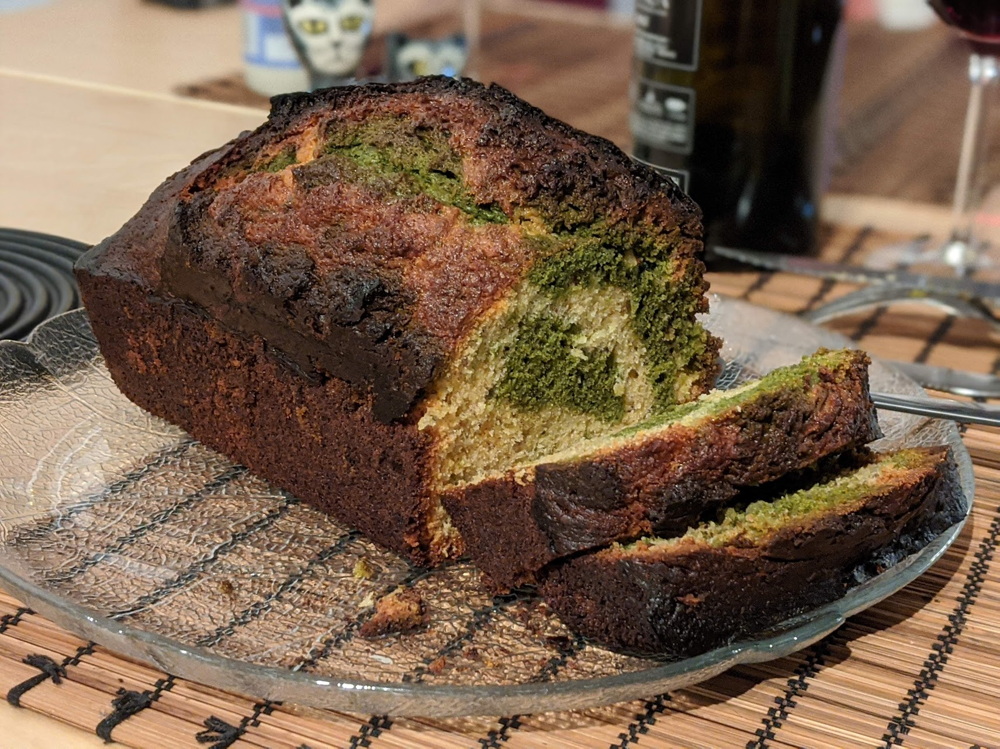

Cake marbré matcha-noisettes

Pour un bon cake:
- Quatre œufs
- 200g de farine
- 200g de beurre
- 150g de sucre
- 50g de noisettes en poudre
- Une bonne cuillère à soupe de miel
- Un sachet de sucre vanillé
- Un sachet de levure
- Deux cuillères à soupe de matcha
- Faire fondre le beurre. Pendant ce temps, casser les œufs, et les mélanger avec le sucre et le sucre vanillé au fond d'un grand saladier.
- Ajouter le beurre fondu, la farine, la levure et le miel. Bien mélanger, et mettre la moitié du mélange dans un second saladier. Faire préchauffer le four à 180°C.
- Dans un des saladiers, ajouter les noisettes. Dans l'autre, ajouter la poudre de matcha. Les mélanger (séparément, évidemment).
- Beurrer un moule à cake, et ajouter les deux mélanges par couches chaotiques : d'abord quelques cuillères à soupe d'un mélange, puis de l'autre, etc. Si on veut ajouter du chaos, passer un couteau dans le mélange doucement d'un côté à l'autre une fois que le moule à cake est rempli.
- Enfourner au moins 45 minutes, poursuivre la cuisson jusqu'à ce qu'un couteau planté dans le cake en ressorte sec.